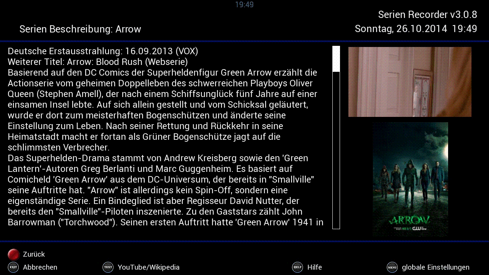
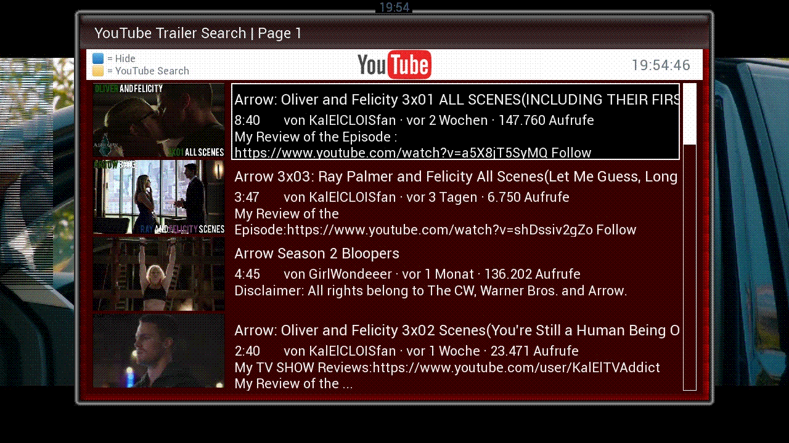
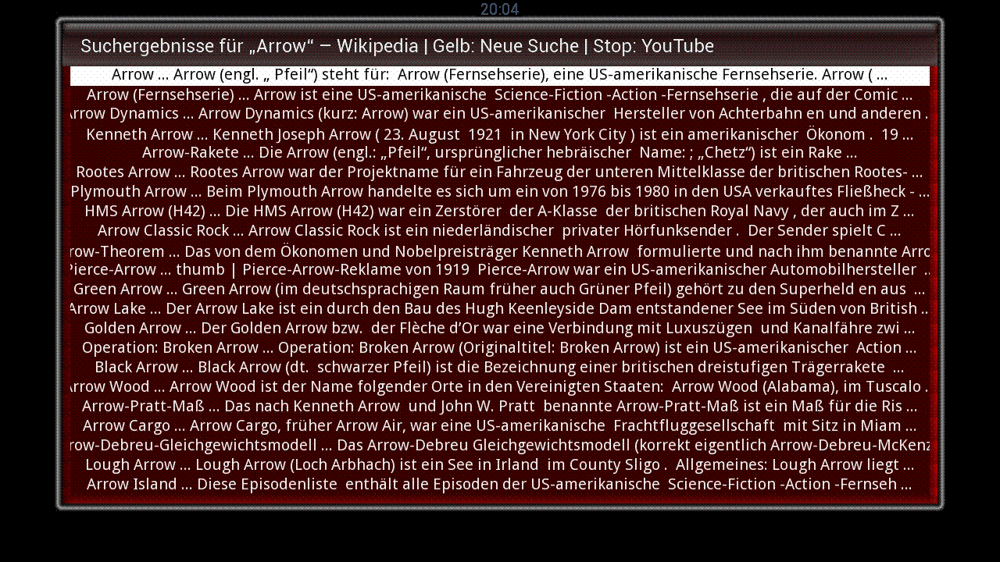

|
6 Die
Anzeige zusätzlicher Informationen
6.1
Die Serien-Beschreibung 
Über die Taste 4 lässt sich
eine Beschreibung von der IMDB für die ausgewählte Serie
abgerufen.

Fig.6.1 Die Serien-Info
6.2
Die YouTube-Suche 
Über die TEXT
Taste (kurz gedrückt) lassen sich Trailer zur ausgewählten
Serie auf YouTube suchen, und abspielen. Voraussetzung dafür ist,
dass das Plug-In EPG-Translator
von @Kashmir installiert ist.

Fig.6.2: Die YouTube-Suche
6.3 Die
Wikipedia-Suche
Die TEXT
Taste (lang gedrückt) startet eine Suche auf Wikipedia. Der
Suchbegriff ist der Name der ausgewählten Serie. Voraussetzung
dafür ist, dass das Plug-In Wikipedia
von @Kashmir installiert ist.

Fig.6.3: Die Wikipedia-Suche
6.4
Das Log anzeigen 
Je nachdem, wie das Log in den
globalen Einstellungen konfiguriert wurde, zeigt die Taste 0 ein mehr
oder weniger ausführliches Log an. Im Log protokolliert der
SerienRecorder genau, was gemacht wurde, und warum es evtl. nicht
geklappt hat. Das kann z.B. sein, dass der SerienRecorder einen
Timer nicht angelegt hat, weil er außerhalb der erlaubten Zeitspanne
ist, oder die Episode auf einem nicht erlaubten Sender ausgestrahlt
wird. Alle diese Informationen landen im Log. Das Log wird auch angezeigt, wenn man den Auto-Check manuell durchführt.
|